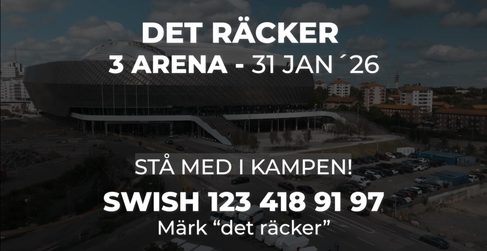

🎥 Livets Ord – Predikan med pastor Daniel Steen
🍞 Nattvarden – Pastor Jan Blom
📜 Om Livets Ord
Välkommen hit, välkommen hem! Sedan församlingen Livets Ord såg dagens ljus den 24 maj 1983 har vi drömt, byggt och utvecklat en kyrka som älskar Jesus och människor.
Livets Ord är en del av trosrörelsen och är en varm och utåtriktad församling – en plats där människor, unga som gamla, kan känna sig hemma och inkluderade. Hos oss ska den som vill kunna växa både som människa och i sin tro på Jesus.
Vår vision och arbete sträcker sig från Uppsala till världen. Vi arbetar för att göra Jesu kärlek tillgänglig för så många som möjligt – genom gudstjänster, mission, bibelskolor, sociala insatser och humanitärt arbete.
Det tilltal vi fick från Herren i början, och som fortfarande leder oss, är dessa ord: “Utrusta Guds folk med hans trosord. Visa dem vilka andliga vapen de har. Lär dem att använda dem och sänd ut dem i segerrik strid för Herren.”
Ledarskapet består av pastor Christian Åkerhielm, pastor Simon Ahlstrand och pastor Sebastian Asklund. Under årens lopp har Livets Ord byggt upp över tusen församlingar internationellt, drivit bibelskolor och bedrivit humanitärt arbete i många av världens länder.
give a gift – ge en gåva
🎵 Hillsong Church Sweden
🎥 Något nytt – med pastor Lina Nielsen
🎥 Förvaltare åt Gud – med pastor Andreas Nielsen
📜 Om Hillsong Church Sweden
Hillsong Sweden är ett lokalt uttryck för Hillsong Church, engagerade i att skapa ett välkomnande och dynamiskt utrymme för människor att möta Guds kärlek.
Vi är en gemenskap som drivs av en passion för Jesus, dedikerade till autentisk tillbedjan och fokuserade på att tjäna vårt lokala samhälle. Vi tror på den lokala kyrkans kraft att transformera liv och ge hopp till Sverige.
Vi finns i Stockholm, Göteborg, Malmö, Jönköping och Örebro, och är en del av en global familj av kyrkor. Vi är en kyrka som älskar Gud och älskar människor – en plats där du kan höra hemma, växa och göra skillnad.
Vi fokuserar på att bygga en gemenskap där människor kan uppleva Guds närvaro och finna sitt syfte.
✝️ Vår tro
Vi tror att Bibeln är Guds Ord – tillförlitlig och tillämpbar i våra liv. Vi tror på en evig Gud i tre Personer: Fadern, Sonen och den Helige Ande. Vi tror att Jesus Kristus är den enda vägen till försoning och evigt liv, att Han dog och uppstod för vår skull. Vi tror på dopet, den Helige Andes kraft, de andliga gåvorna och vikten av den lokala kyrkan som gemenskap av troende.
Vi tror att Gud har kallat oss att leva heliga och fruktbärande liv, välsignade för att välsigna andra. Vi tror att Herren Jesus Kristus kommer åter, precis som Han har lovat.
🌍 Iris Global – Mission & Compassion
Iris Global är en missionsrörelse grundad av Heidi & Rolland Baker. Deras arbete genomsyras av kärlek, tro och praktisk tjänst – att möta de fattiga, sjuka och bortglömda med Jesu kärlek i ord och handling.
🎥 put me on the potter's wheel
🎥 Nkele - #Africa praise to the Lord
Iris Global verkar i över 30 länder, med fokus på barnhem, sjukvård, matdistribution, evangelisation och utbildning. Allt sker i enkelhet och kärlek – till Guds ära och människors upprättelse.
🔥 Heart of Evangelism – DET RÄCKER 🙏
“Denna arenasatsning görs för att vi har fått nog. Jag har sett på tok för många föräldrar begrava sina barn. 12-åriga barn ska inte bli skjutna eller se sin förälder bli skjuten. Politiker kan inte ensamma lösa detta. Sverige är unikt i statistiken och Stockholm beskrivs som the Murder Capital of Europe.”
”Vi tror däremot på kraften i ett enat folk. Detta är en kamp om våra barns framtid. Och Sveriges framtid. Vi måste inse att själviskhetens och individualismens tidsålder har gjort sitt. Antingen vänder vi utvecklingen tillsammans, agerar – eller så får våra barn fortsätta betala priset för vår passivitet.”
”Detta är en kamp för kärleken, hoppet och framtiden. För medmänskligheten.”
”Vi är i behov av att samla in 5 miljoner kr. Vi vill lägga biljettpriset så lågt att alla har råd att gå. Vi har ett stort problem. Som kräver en stor arena. Jag tror på en stor Gud. Och jag tror på svenska folket när vi enas i kärlek och tro på framtid. Vi har saknat ledarskap. Och nu tar vi kollektivt ansvar och säger att: DET RÄCKER!” – Sebastian Stakset
🎟️ Biljetterna släpps 2 oktober på Internationella Anti-vålds-dagen. Stå med i kampen för kärlek, hopp och framtid!
Swish: 123 693 68 19
Bankgiro: 5323-5669